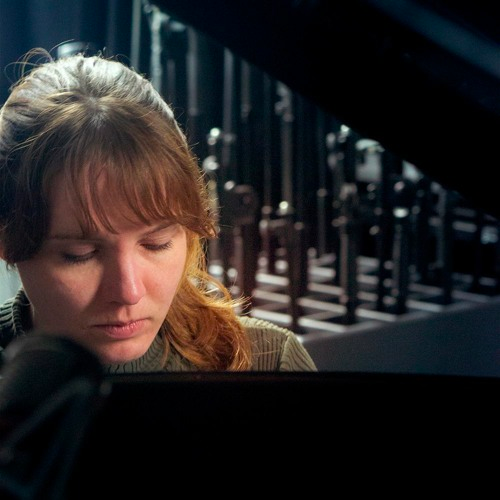

Classical pianist, composer.
Currently working on my first album 'Watershed'. Besides that, I enjoy playing (neo-)classical pieces, but I also like to make covers.
I have taught myself to play the piano since I was about 10 years old. Over the years I have come to feel very passionate about music, so I recently started piano (improvisation) lessons.
Despite my classical background I mainly listen to (alternative) rock bands in my free time, with The Killers being my favorite band. :)
Follow me on: